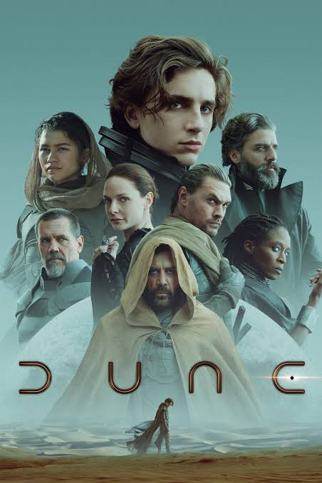

Background
I’ve just finished watching Dune (Part 2). Rather than trying to write something right now, while my imagination and eyeballs and earholes are recovering from getting sandblasted for three hours, below’s something I wrote after watching Dune (Part 1).
Since watching the first film, I read the book, then the next book, then (I think) the book after that. The momentum ran out, however, somewhere in God Emperor of Dune, even though the basic conceit of the fourth book had the chimera-like appeal I discussed briefly in this post on Robocop.
Anyway, without further ado, here’s what I wrote after watching the first Dune film, back in 2021:
Thoughts on Dune (Written 31/10/21)


Recently I saw Dune. The new version, Denis’ (without an s) version. You know, the director who takes really prestigious 80s sci-fi films and tries to make them more prestigious, more grand, more ‘authentic’ to the directors’ and the writers’ and the fans’ vision of what the story really is than it ever was before? You know, the director of Bladerunner 20-40-something, featuring the replicant killer with the boyish face and the big sad eyes, and his platonic sex hologram virtual assistant whom he can’t have sex with, because she’s virtual, and so she pimps out a human prostitute for him as a welcome home gift, the version featuring bright rural bits and hazy rubbish bits of the Bladerunner universe as well as the dirty dark city bits from the first film? You know, the film where that allegedly predatory rock star chewed carpet for at least twenty excruciating minutes, even though the carpet was computer rendered, because of course that’s how a self-aggrandising rockstar-engineer god would behave? You know, the film with an ageing Harrison Ford reprising his role from the first film, looking and moving oddly stiff and fragile, not so much because his character’s way past his expiry date, but because of the arthritis that comes with human senescence? You know, that Denis-without-an-s?
Anyway, this time he’s remade another 80s sci-fi film, based on a 60s sci-fi book. The 80s film was made by David Lynch. Except it wasn’t. Lynch took his name off the film, and the version we saw then was made by a shadowy cabal of Money Men, who wanted another Star Wars, and didn’t take kindly to an arthouse director known for visually grotesque surrealism picking out the visually grotesque images, ideas and senses from the source material and spending millions of dollars building sets and props that showed, in bright Technicolor glory, just how visually grotesque and surreal they are. When I saw the 80s film, rewatching in full over one of many timeless lockdowns, I saw a beautiful hot mess. Lynch’s scenes stick out, claw to the mind, try to claw out, from inside the Money Men’s rushed film. A giant space-folding worm-baby in a tube, with a rubbery vagina-face, flanked by brightly-colored avant-garde priests in full regalia - that’s Lynch. An obese man who hovers silently to tower over a serve with a conveniently installed heart valve, which he pulls like a bathroom plug, causing blood to gurgle out like a low pressure tap - that’s Lynch. A skinny and mute Sting dancing with a knife in a loincloth - that bit’s Lynch. The fifteen minute montage of Kyle Mclochlan dressed in a space suit, flanked by others similarly attired, pointing a sound gun at stumbling masked legions and shouting ‘kaplow!’ (or words to that effect) to make the bad guys fall over - that’s not Lynch.1 That’s the Money Men, looking to turn the rushes back into the Star Wars-like swashbuckler they wanted, and hoped,desperately, would bring a positive return to their investment. The Money Men rushed with the rushes, demanding that a very big book get turned into a not-too-long film. That’s why the 80s film isn’t just David Lynch weird, it’s weird weird.
Denis-without-an-s’ Dune doesn’t rush. It’s much better paced, because it stops midway. It only covers about half the story. It’s a promise of a sequel, and a promise I hope gets kept, if just for curiosity’s sake. Denis-without-an-s’ Dune is a swashbuckler, however, and I think that’s because Dune is a swashbuckler, as well as quite a few other things too.
How do space swashbucklers work? I mean, if it’s space, it’s probably the future, with advanced technology, and so advanced weaponry. We know in our world that no army was won a battle or war with blades and clubs when the other side has bullets and rockets, so why in a future setting (or in Star Wars’ case an as-if-future setting, preamble notwithstanding) would melee weapons, rather than projectile weapons, tend to predominate? In Dune’s case, it’s because of a magic shield, a personal force field2 whose mechanism of action is never properly explained but whose properties are that, the greater the force, the greater the resistance. Or maybe it’s the greater the speed, the greater the deflection. Again, it’s not well explained. It’s advanced technology, advanced so far as to effectively be magic, and therefore beyond explanation. To the extent it works like anything we have, it seems to work like a Non-Newtonian fluid, like oobleck (cornstarch suspended in water) or custard. Fire a cannonball into a tub of oobleck, and this real magic stuff will stiffen up and resist this great spherical mass, potentially becoming like an impenetrable sense-defying wall. Take the same cannonball and simply place it on top of this oobleck vat, however, and the stuff will yield, not bother resisting or deflecting at all, and the ball will just glide on through, reaching the bottom of the vat a few seconds later. So, in Dune, the people and the buildings and vehicles have a kind of invisible oobleck forcefield around them, so fast moving bullets won’t get through to them, but comparatively slow moving blades will. In Dune, warriors cloud themselves in magical invisible cheap custard force fields; that’s why they can travel the universe, colonise planets, bend time and place, but still fight with swords and knives. It’s obvious really, just a consequence that everyone (or at least every empire and army) has in the world of Dune.

Same question, different answer: Why do the warriors of Dune fight with knives and swords? Because Dune’s a swashbuckler, and Frank Herbert wanted it to be. The magic custard’s just a narrative device, a conceit, to allow things to happen that way. Frank Herber wanted his heroes and villains to fight like they did in mediaeval times, or at least like Victorian popular fiction authors portrayed mediaeval characters as fighting. Frank Herbert, maybe, like stories about knights and pirates, alternating trading blows and witty ripostes, in which the winners and losers depended mainly on skill, and skill was largely a function of virtue, along with where an encounter occurs within a narrative arc. So Dune’s a swashbuckler, because Frank Herbert wanted it so, and so, sixty years later, Denis-with-no-s’ Dune is also a swashbuckler, just as the Money Men wanted Lynch’s/not-Lynch’s Dune to be many decades earlier. Don’t think too much about the space custard, just enjoy the swashbuckling.
But of course Herbert didn’t just want Dune to be a swashbuckler in space, but much more besides. Dune, as far as I can tell, is Space Lawrence in Space Arabia, where Space Lawrence meets Space Pocahontas and forges a romantic as well as military union the Space Arabs (who, by implication, must also be Space Indians, if the Fremen Chani is Space Pocahontas). But that’s not all, Space Lawrence is also a Space Prince, avenging his father’s death through an act of Spakespearean regicide. And he’s not just a Space Prince, but also a Space Witch, with burgeoning mind control abilities being bestowed and developed by his Space Witch mother. Because you see, Space Lawrence the Space Prince’s father defied royal edict and imperial custom to marry into magic, to beguile a member of a sacred Space Coven, who decades later still don’t know what to make of this unusual union, bringing together the archetypically patriarchal power structure of a King who can control armies and ships with the archetypically matriarchal power structure of the Space Coven, whose domains appear to be of mind and Mother Nature. So, that’s who Paul is: just just Space Lawrence, freedom fighter and rebel, but also a Space Prince with a divine right to rule, and a Space Witch with magic powers.
And what are they fighting for? Not just honour, but Spice. And what’s Spice? Spice is Space Nootropic, able to turn people into human calculators known as mentats. But it’s also Space Oil, able to power and generate technologies of conquest that expand imperial territory and powers by orders of magnitude. Space also seems to be a Space Psychedelic, opening up new windows of perception into the wonders of the world. And there’s more, Spice also seems to be a Space Mutagen, unleashing the potential of the Human Race and bringing in new phases of forced evolution like Arthur C Clark’s monolith or any number of conceits, reflecting any number of contemporaneous interests and concerns - radiation, nanotechnology, alien visitation etc - from any number of American Superhero franchises.
In short, Spice is good, apparently good at pretty much everything, and so good it’s worth fighting for, and risking almost anything to get hold of and keep hold of.
And where does Spice come from? Only Dune, an arid, near uninhabitable sand planet. And where, even more specifically, does Spice come from? Well, from Space Words, giant mindless remorseless manifestations of the unconquerable forces of Nature, primitive forces so powerful no Space Tech can cow or conquer them. Spice is manna, essential biblical nourishment for a chosen people, but unlike the manna of the Old Testament, which comes from above, this manna comes from below.
Have I missed anything? The grotesque evil of the Harkonen, I guess, and the shadowy underhanded realpolitik of the emperor too. But of course the Hero needs his Foil, and his Journey can’t go exactly to plan. These plot elements just follow from the need to centre on a Hero’s Journey, and so seem to be necessary elements given the key story being told. Regardless, there’s clearly a lot going on in Dune. As a story, it seems to be almost as rapacious and voracious as its worms, hoovering in plot points, ideas, historical frames of reference and concepts from seemingly anywhere and everywhere, without any apparent initial regard for how these plundered elements might ever be made to fit together into something that looks like a coherent totality.
But at the same time, it’s clear Dune wants to be more than a grab bag of ideas and story fragments. It also wants to be a world, and worlds are places where people (not just heroes and villains) live and act, and act under the expectation that the world will respond to their actions in consistent and predictable ways. To put it another way, worlds need rules, and rules impose limits. A story unmoored from a world, a system of consistent rules defining the consequences of actions, is a story where characters’ actions and motivations lack consequences, because the characters don’t live in a place, but in a fever dream, which is to stay that the characters live or matter in no meaningful sense whatsoever.
There’s a golden rule of improv, I’ve read, which can be boiled down to, ‘Yes, and’. Someone takes something, adds a premise to it, and passes it on. Reject a new premise, or try to delete an old one, and the world falls apart, the other performers glower and fall silent, and the audience’s coughs and rustling papers become deafeningly loud. The problem of Dune is the problem of an improv scene that’s run on in an author’s head for months or years on end: yes and yes and yes and yes and yes and… It’s the problem of an over accumulative imagination, a mental magpie whose nest neighbours a tip, a hoarder whose house is now a warren and whose floors creak under the weight of decades of accumulation and block out the sunlight. Having some stuff, some ideas, is great. Having too many, however, is a burden. The problem with Dune, which seems to be a problem with Dune the novel not Dune by Denis or David, is the problem of sci-fi, and also the opportunity of sci fi. The opportunity of sci-fi is that of filling an empty room with whatever you’ve ever wanted, in any order and configuration you see fit. Conversely, the problem of sci-fi is in realising when the room is already too full, and when its contents are about to topple onto its occupant. That’s the problem of Dune, and the problem of sci-fi, and why I’m looking forward to seeing Denis-without-an-s’ realisation of Frank Herbert’s hot mess of a story in Dune, part two. As well as the intended narrative peril the story brings through the trials it inflicts on its characters, there’s the unintended narrative peril affecting the entire world: like a giant game of conceptual Jenga, is this new idea, or that new idea, the idea that’s going to cause the entire grab-bag scrapheap world of Dune to tumble into itself, to collapse like a pile of sand?
Footnotes
Though, I now realise, the sound guns were Lynch’s addition, a substitution from the knives and swords in Herbert’s novel, because apparently Lynch didn’t want to make a ‘kung fu’ film. Regardless, I’m referring mainly to the uneven pace of the film, the rushing, papering over and shoehorning in of story elements through use of montage and voiceover.↩︎
One addition made to the shields in Denis’ Dune is colour coding: blue when the shield ‘works’, red when it ‘fails’. This way the colour red can be associated with a character’s demise in a sword fight, without the red being that of the defeated party’s blood. Given Denis’ Dune is a 12A certificate, and more inclusive certifications were likely a condition of a large budget, the red-glowing shield shorthand appears a fairly clever way of showing-without-showing. The need to avoid being too graphically explicit may also explain why much of the film, especially those scenes involving the dastardly Harkonen, is extremely dark.↩︎